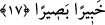

“Buna rağmen onlar orada kötülük işlerler” yâni bu ülkede tâatten uzaklaşırlar ve
inatla, ısrarla isyan ederler. “Böylece o ülke helâke müstehak olur” kötülükleri ve
taşkınlıklarını takiben de azâbı gerektirecek şeyler, tahakkuk eder. Kâşifî şöyle der: “O
ülke ehli üzerine azâb kelimesi, yâni onlara azâb edileceği hükmü vâcib oldu ki ezelî
hükümde ilâhî cezâya lâyık oldukları önceden yazılmıştı.”
Halkını helâk etmek ve meskenlerini de tahrip etmek sûretiyle “Biz de orayı
darmadağın ederiz.” “
et-Tedmîr (darmadağın etmek)”, izini silmek ve binâyı
yıkmak sûretiyle yok etmek demektir.
Âyetteki “emrederiz” ifâdesinin onları fıska/kötülük işlemeye yöneltmekten ve ona
sebep olmaktan mecaz olduğu da söylenmiştir. Bu da onları şımartan ve fâsıklığa
götüren şeylerin onların üzerlerine dökülmesi ile olur.
17. Nuh’tan sonraki nesillerden nicelerini helâk ettik. Kullarının günahlarını bilen
ve gören olarak Rabbin yeterlidir.
“Nuh’tan sonraki” yâni, Âd, Semûd ve daha sonrakiler gibi Nuh zamanından sonraki
“nesillerden nicelerini” yâni pek çoklarını “helâk ettik.” Allah Teâlâ ‘Âdem’den
sonra’ buyurmamıştır. Çünkü Nûh (a.s.), kendisini yalanlama konusunda kavmi çok aşırı
giden ilk peygamberdir. Yine Nuh (a.s.)’ın kavmi Tûfan’la kökleri kazınmak sûretiyle
büyük cezaya çarptırılan ilk topluluktur.
“
el-Karn”, insanın, yorulup yıprandığı bir süredir. Ancak daha çok yüz senelik
bir zaman için kullanılır. Çünkü Rasûlullah (a.s.) bir çocuğa: “Bir karn yaşayasın.”[55]
buyurmuş, o çocuk da yüz sene ömür sürmüştür. Karn, bir topluluktan herkesin yok
olduğu, o nesilden hiç kimsenin kalmadığı zaman dilimidir. Her asrın yaşayanları
kendilerinden sonraki nesiller için bir karndır. Çünkü onlardan önce gelirler.
“Kullarının günahlarını bilen ve gören olarak Rabbin yeter.” Allah zâhirî ve bâtınî
bütün günahları kuşatır ve bunlara göre cezalandırır. Gayba ait olan bâtınî işlerle ilgili
olan habîr (bilen) kelimesi önce, buna mukabil zâhirî işlere nisbet edilen basîr (gören)
kelimesi ise daha sonra getirilmiştir. Bu, bilmenin ilgili olduğu zâhirî amellerin temeli
olan niyet ve îtikadların daha önce olması sebebiyledir.
Burada peygamber gönderme, emretme ve bunların ardından onların kötülük
işlemesinin kendilerinden sudûr eden günahların bilinmesi için olmadığına işâret vardır.
Çünkü Allah bunu daha önce de biliyordu. Ancak bu durum onların her türlü mazeretini
ortadan kaldırmak ve onları delille ilzâm etmek/susturmak içindir.
Âyette Allah’a ve Rasûlü’ne itâat etmeleri, Allah’a isyan etmemeleri, aksi takdirde
geçmiş ümmetlerin başına gelen musîbetlerin onlara da geleceği konusunda özellikle